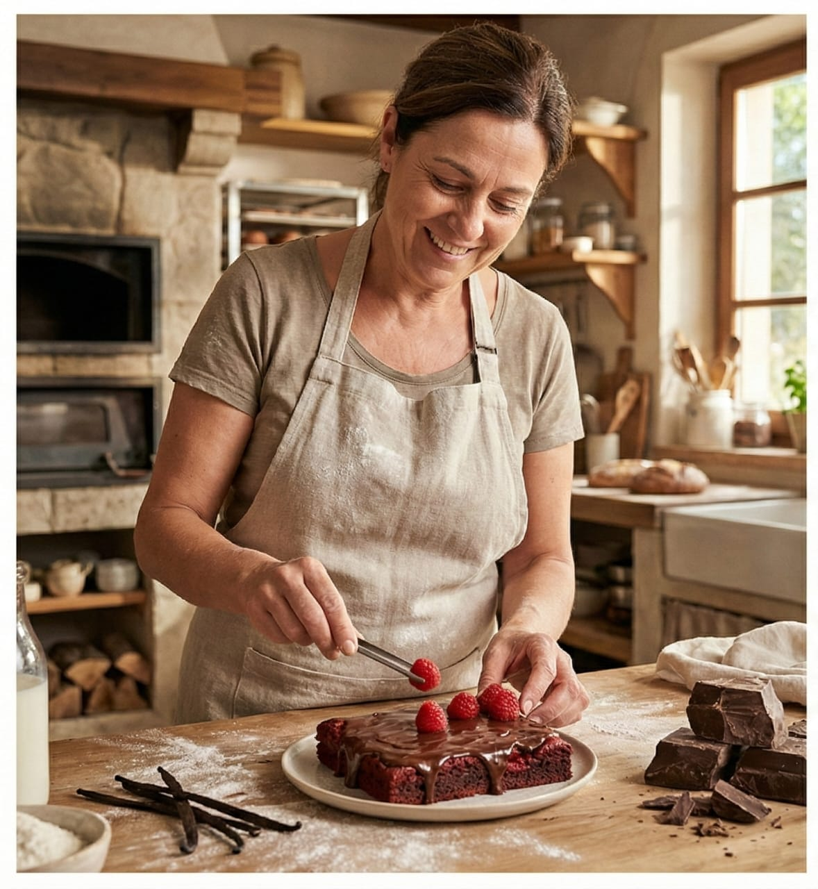
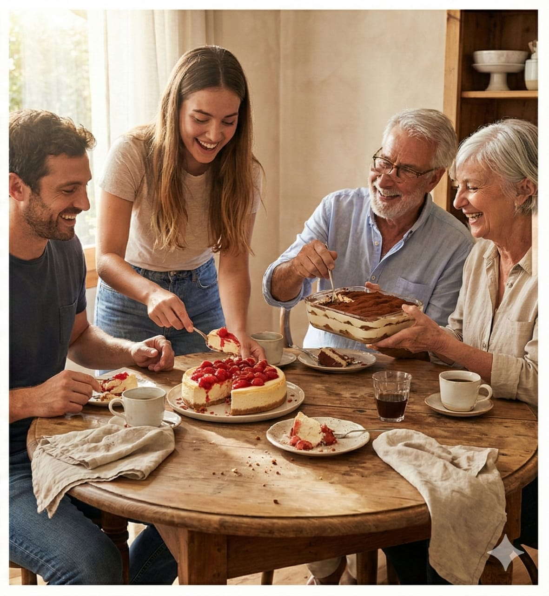

Nosotros


Mi Dulce Lucía nació hace más de diez años como un pequeño sueño familiar, inspirado en la dulzura de mi sobrina Lucía, quien no solo le dio nombre a la pastelería, sino también su esencia: cercana, alegre y auténtica. Comenzamos con un horno, unas pocas recetas llenas de amor y la ilusión de crear un espacio donde cada persona encontrara un pedacito de hogar en cada bocado.
Paso a paso, receta tras receta, crecimos escuchando a nuestros clientes y acompañando momentos únicos: cumpleaños, aniversarios, reuniones familiares y celebraciones que nos permitieron formar parte de historias inolvidables. Lo que empezó como una idea casera se transformó con el tiempo en una marca consolidada, reconocida por su calidad artesanal, su atención cálida y su compromiso con la excelencia.
Hoy, Mi Dulce Lucía ofrece una amplia gama de servicios pensados para cada necesidad: productos diarios para pequeños consumidores, tortas personalizadas para el público general, catering completo para eventos sociales y corporativos, y soluciones a medida para empresas que buscan calidad, presentación y confiabilidad. Nuestro equipo trabaja con dedicación para garantizar frescura, puntualidad y un estándar gastronómico que nos distingue.
Hemos llegado lejos, pero aún queremos ir más allá. Nuestro objetivo es seguir expandiendo nuestra propuesta, desarrollar nuevas líneas de productos, perfeccionar la experiencia de catering y continuar construyendo vínculos sólidos con cada cliente. Soñamos con que Mi Dulce Lucía siga siendo ese lugar donde los sabores generan recuerdos, las emociones se celebran y la calidad se siente en cada detalle. Gracias por ser parte de esta historia en constante crecimiento. Sabores que celebran momentos.